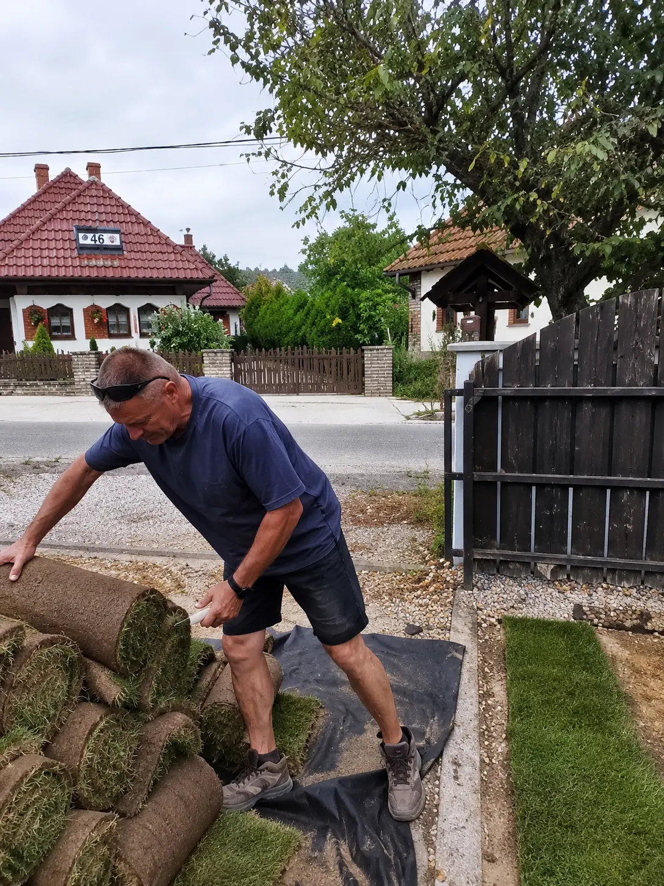

A Kertek Doktora mögött álló ember, egyszemélyes vállalkozás, versenyszintű igényességgel.

Kraly Péter vagyok, a Kertek Doktora Kft. alapítója. Egyszemélyes vállalkozásként dolgozom, és ezt nem hátránynak, hanem a legnagyobb erősségemnek tartom. Amikor Ön engem bíz meg, a felméréstől a tervezésen át az utolsó fűszálig ugyanaz a kéz és ugyanaz a felelősség kíséri végig a munkát. Nincs elmosódó felelősség, nincs cserélődő brigád.
Évek óta a kertek egészségével foglalkozom, és a családi kertek mellett komoly, profi feladatokat is vállalok. Dolgoztam már NB I-es labdarúgó-stadion pályáján is. Az ott megszokott igényesség és precizitás köszön vissza minden magánkertben, amit a kezembe vesznek. Munkát nemcsak itthon, hanem külföldön is vállalok: Ausztriában és Angliában egyaránt dolgozom.
Hiszek abban, hogy a jó kert nem egyszeri munka, hanem hosszú távú kapcsolat: ezért nemcsak megépítem, hanem gondozom is, hogy évek múlva is ugyanolyan szép legyen, mint az átadás napján.
Átlátható folyamat és előre tervezhető költség, hogy pontosan tudja, mi és mikor történik a kertjében.
Kimegyek a helyszínre, megnézem az adottságokat, a talajt, a fényviszonyokat, és meghallgatom, hogyan képzeli el a kertjét.
Elkészítem a koncepciót és a tételes, átlátható árajánlatot, így semmi nem éri meglepetésként.
Egyeztetett ütemterv szerint, egy felelős kézzel valósítom meg a kertet, folyamatos visszajelzéssel.
Az átadás után is elérhető vagyok: rendszeres gondozással tartom formában a kész kertet.
Egy kéz, egy felelős, kézzelfogható eredmény. Kérjen felmérést, és nézzük meg együtt, mi hozható ki a kertjéből.
Kapcsolatfelvétel